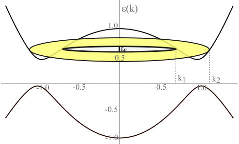
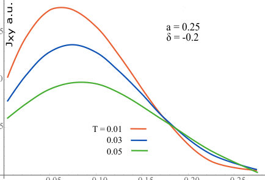
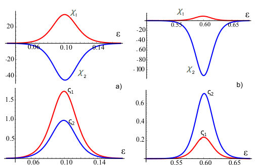
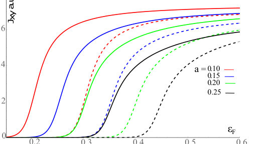
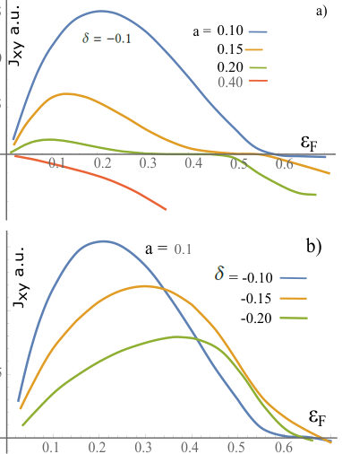
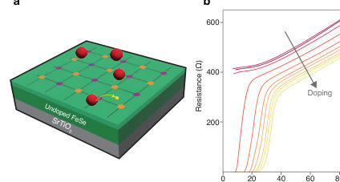
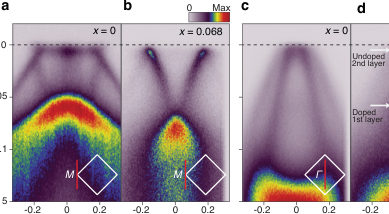
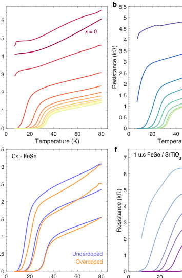
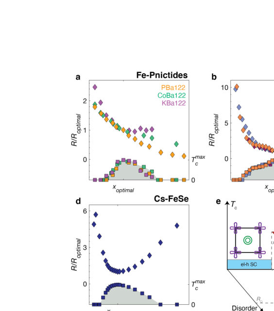

Authors: Bagun S. Shchamkhalova, Vladimir A. Sablikov
Type: theory · Category: other · PDF: https://arxiv.org/pdf/2605.30881v1
Analysis basis: full PDF text, analyzed in chunks





Summary. This work theoretically examines the Spin Hall Effect in 2D topological insulators exhibiting Mexican-hat dispersion. The authors find that extrinsic scattering mechanisms can generate a spin Hall current that surpasses the intrinsic contribution. Crucially, this extrinsic current displays a complex, non-monotonic dependence on the Fermi energy, which is dictated by the interplay between inter- and intra-contour electron transitions.
Why it may be interesting. The complex, energy-dependent behavior of the SHE, particularly the dominance of extrinsic effects over intrinsic ones at certain energies, provides rich physics related to topological transport phenomena.
Main problem. The study investigates the Spin Hall Effect (SHE) in two-dimensional topological insulators characterized by 'Mexican-hat' dispersion and a ring-shaped Fermi surface.
Main result. The extrinsic SHE current can significantly exceed the intrinsic SHE current, and its dependence on the Fermi energy ($E_F$) is highly non-monotonic, exhibiting maxima, minima, and sign changes.
Method. The analysis employs the Boltzmann equation solved for two dispersion branches, incorporating spin-dependent skew scattering enabled by second-order impurity scattering processes.
Model / system. The system is modeled using the Bernevig-Hughes-Chang (BHZ) Hamiltonian for topological insulators. Key features include the Mexican-hat dispersion leading to two isoenergetic contours and a ring-shaped Fermi surface.
Key observables. Extrinsic Spin Hall Current (SHC), Intrinsic Spin Hall Current (SHC), and the dependence of these currents on Fermi energy ($E_F$).
Important parameters / regimes. Fermi energy ($E_F$), hybridization parameter ($a$), and band asymmetry ($\delta$).
Assumptions / limitations. The analysis initially ignores boundary effects, and the screening potential calculation utilizes the Random Phase Approximation (RPA).
Figures summary. Figures illustrate the MHD and ring-shaped Fermi surface, and show the non-monotonic dependence of the extrinsic SHE current on $E_F$ for varying material parameters.
Paper structure. The paper develops the theory by calculating scattering amplitudes via the $t$-matrix formalism and solving the resulting Boltzmann equation system of linear equations to determine the non-equilibrium distribution functions and resulting currents.
We study the spin Hall effect in two-dimensional topological insulators with "Mexican hat" dispersion and a ring-shaped Fermi surface which are formed due to the band inversion. Electron transitions between different isoenergetic contours and the quantum metric of band states play an important role in the transport properties of such materials, since they largely determine the spatial distribution of the electron charges screening the impurity potential and the scattering probability [Phys.B, 719, 417942 (2025)]. Here we study a spin-dependent skew scattering, which is enabled by the second-order scattering processes, and show that the extrinsic spin-Hall current (SHC) can significantly exceed the intrinsic SHC arising from the Berry curvature. Furthermore, due to Mexican-hat dispersion, the SHC exhibits a very unusual dependence on the Fermi energy ($E_F$). The extrinsic SHC reaches a maximum at some $E_F$, then decreases with increasing $E_F$ and can even change a sign. This complicated behavior reflects an interplay of energy dependencies of such important factors as probabilities of inter- and intra-contour transitions, as well as different electron velocities in two contours.
Authors: Paul T. Malinowski, Chad J. Mowers, Yaoju Tarn, Darrell G. Schlom, Brendan D. Faeth, Kyle M. Shen
Type: experiment · Category: strongly correlated electrons · PDF: https://arxiv.org/pdf/2605.31459v1
Analysis basis: full PDF text, analyzed in chunks




Summary. This work investigates the superconducting dome in electron-doped FeSe using advanced epitaxial and transport measurements. The key finding is a robust linear scaling between the critical temperature ($T_c$) and the residual resistivity ($ ho_0$) across the entire doping range. This suggests that the superconductivity in this material is fundamentally limited by disorder scattering rather than solely by the carrier concentration.
Why it may be interesting. The strong correlation between $T_c$ and disorder ($ ho_0$) suggests a universal mechanism for high-$T_c$ superconductivity driven by scattering, which is relevant to understanding pairing mechanisms in strongly correlated systems.
Main problem. To determine the physical mechanism controlling the superconducting dome observed in electron-doped FeSe, as its full phase diagram remains unexplored.
Main result. The superconducting transition temperature ($T_c$) scales robustly and linearly with the residual resistivity ($ ho_0$) across the entire dome, suggesting that disorder, rather than carrier doping alone, is the primary control parameter.
Method. The study combines molecular beam epitaxy synthesis, alkali surface doping, in-vacuum electrical transport measurements, and ARPES to map the phase diagram.
Model / system. The system is electron-doped FeSe thin films, where doping is controlled by Cs surface deposition. The analysis models the film as a stack of resistors to extract the sheet resistivity ($ ho_0$).
Key observables. Superconducting transition temperature ($T_c$), residual resistivity ($ ho_0$), and the evolution of the electronic band structure (Fermiology) via ARPES.
Important parameters / regimes. The doping level (controlled by Cs deposition), the residual resistivity ($ ho_0$), and the elastic scattering rate ($ au^{-1}$).
Assumptions / limitations. The analysis assumes the system can be modeled as a stack of resistors, and that the charge transfer of deposited Cs is confined to the topmost FeSe layer.
Figures summary. Figures show the doping dependence of $T_c$ and resistivity, highlighting a non-monotonic evolution of $ ho_0$ and a clear linear scaling plot of $T_c$ vs. $ ho_0$ across the dome.
Paper structure. The paper systematically explores the entire superconducting dome using multiple techniques, establishing the $T_c$-$ ho_0$ scaling, contrasting this behavior with other superconductors, and proposing that disorder limits superconductivity in this material.
Superconducting domes are conspicuous features of the phase diagrams of most unconventional and high-temperature superconductors. The superconducting transition temperature ($T_{c}$) of FeSe can be dramatically enhanced with electron doping, but unlike all other high-temperature and unconventional superconductors, its full phase diagram and superconducting dome have yet to be fully explored. Here, we employ a combination of molecular beam epitaxy synthesis, alkali surface doping, in-vacuum electrical transport, and angle-resolved photoemission spectroscopy to investigate the entire superconducting dome of electron-doped FeSe, achieving a fully metallic state where superconductivity is suppressed in the heavily overdoped regime. We discover a robust scaling between $T_{c}$ and the residual resistivity ($ρ_{0}$) which holds across the entire superconducting dome, suggesting that the evolution of $T_{c}$ is heavily influenced by the evolution of the elastic scattering rate in the high-$T_{c}$ electron-doped phase. This in turn suggests that the superconducting dome in electron-doped FeSe appears to be fundamentally different than that of other unconventional superconductors where doping plays the primary role, and may be driven primarily by the sensitivity of the superconductivity to disorder.